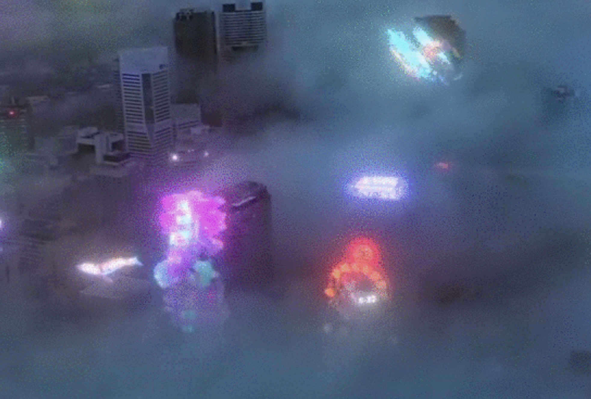

CVPR 2026 · 4D World Models WorkshopBrown IVL · Denver, Colorado · June 3–7, 2026
WATCH DEMOTRY THE ALPHAPAPER
Build the world. It stays.
THE SHIFT Not 3D → 4D — but stateless scenes → stateful worlds: persistent, voice-authored 4D worlds, real-time on the phone in your pocket. HTML for the physical world.photograph → NeRF → 3D splats → 4D splats → spatial substrate → XRAI a frozen image, one step at a time, becomes a living, shared, open world.
THE WAVE One paradigm, converging: mixed reality × AI agents × open source × multimodal + world models × x‑ray provenance = the open spatial web. Anyone authors → every scene carries provenance → creations become open training data. Earned on merit and utility — not locked in a black box.
James A. Tunick1,2 · Ryan Brant1 · Jacob D. Pennock1 · Justin Kasowski11H3M, Inc. USA · 2The IMC Lab USA
DEPLOYED iOS · web viewer · Apple Vision Pro
CLINICAL SPECT/CT on Magic Leap · Memorial Sloan Kettering · NIH/NCI P30 CA008748
LIVE spatial AR overlays · concerts · AI motion-cap performances · XR stage
SPAG — Spherical Pixel-Aligned Gaussians — with FPS+thermal adaptive LOD.
FIG 1 Median frame time, no-LOD vs LOD-adaptive, three commodity mobile devices. Dashed line marks the 60 fps render budget (16.7 ms). LOD recovers 2.7–4.1×.
2.7–4.1×render speed-up LOD on / off · A16 · A14 · SD 8G2
60fpssustained on iPhone 14 Pro at thermal steady-state
360+VFX effects bound to one 5-property compute contract
T 1 Render time · 12 splats · 3 video · 1 avatar · n=30 s post-thermal
Device
No LOD
LOD
fps
iPhone 14 Pro · A16
38 ms
14.2 ms
60+
iPhone 12 · A14
81 ms
19.7 ms
48
Galaxy S23 · SD 8G2
44 ms
15.8 ms
57
02
Add 360 effects. Pay for one.
One depth-to-world dispatch per frame (32×32 threads · Metal/Vulkan). 5-property contract consumed by every effect.
depth · color · audio · ML pose
↓
DepthToWorld compute
↓
ColorMap
DepthMap
RayParams
InverseView
DepthRange
↓
360+ VFX · O(1) per added effect
Same substrate first proven on live SPECT/CT volumes at Memorial Sloan Kettering (Magic Leap · NIH/NCI) — rendering as multimodal and rich as its inputs. Adding effects costs only binding, never the shared pass.
03
Close it. Come back. Still there.
Three-tier path matched to edge constraints. Discover small · hydrate on open · replay edit log.
METADATAFirestore-indexed discovery · <300 ms reload
MANIFESTXRAI · x-ray provenance + edit history · open spec
PAYLOAD.splat / SPZ from object storage · <1 s LTE
Three steps: photo → upload → publish. Four authoring surfaces lower to one persistent scene graph.

FIG 2 Real iPhone capture — a skyline alive with persistent, user-authored holographic scenes: the world everyone builds, anchored in place and revisitable. Authored by voice, gesture, and no-code, all lowering to one scene graph.
✱ BRUSH · HOLOGRAM · HI-FI
⏵ VFX COMPOSITION
◈ VOICE INTENT
⊕ DIRECT MANIPULATION
05
Capture, scan, or generate
FIG 3 Three pathways — Gaussian capture · photogrammetry · AI generation — normalize into a Spatial Scene Graph (SSG) that the LOD Manager + VFX Pipeline render and persist. Latent Gaussian generation [L3DG, Roessle 2024] is identified as future work.
L3 Meaningprovenance · authorship · memory
L2 Cognitionintent · semantic actions
L1 Perceptionsegmentation · pose · audio
L0 Geometrysplats · depth · meshes
The SSG in four user-configurable spatial-intelligence layers — choose what runs on your world. XRAI manifest ≤5000:1 vs raw payload · .splat/SPZ interchange · spec 037.
06
The open data flywheel
Every creation, with provenance, makes the next world model better — for everyone.
Anyone authorsvoice · phone · no-code
↓
XRAI x-ray provenanceevery edit attributed · open
↓
Open training datalicensed · accountable · diverse
↺
Better world modelsback to everyone
The more people build, the better the models — and the better the models, the more people build.
jARvis · VOICE → AR · 2 SECONDS · ON DEVICE · NO CLOUD
“add a pink sphere to the portal.”
1 UTTER on-device speech
→
2 REGEX PARSE <1 ms · local
→
3 SSG OP scene graph edit
→
4 VFX SPAWN same op as direct UI
91 % success across 143-test regression · cloud LLM fallback for low-confidence. Voice + gesture + no-code all lower to the same scene-graph operations — the layered architecture that makes a 2-second voice-to-AR wedge possible on device.
07
How to score a 4D world model that ships
A1
Mobile render efficiency
median + p95 frame time on commodity mobile GPUs
REPORTED
A2
Geospatial alignment
registration error after session re-entry
OPEN
A3
Persistence fidelity
anchor recovery · edit survival · reload cost
REPORTED
A4
Creator editability
semantic-action success · edit-to-preview latency
REPORTED
08
Discussion · limits · future
Reconstruction · capture burden
Casual phone video introduces blur + dynamic-object artifacts even w/ ReconFusion priors. Shape-of-Motion + MoSca improve robustness; real-time monocular 4D for in-the-wild AR remains open.
Editability
Compositing a Gaussian avatar into a Gaussian background without seams is open. Feature-field extensions (LangSplat) begin to help — do not resolve.